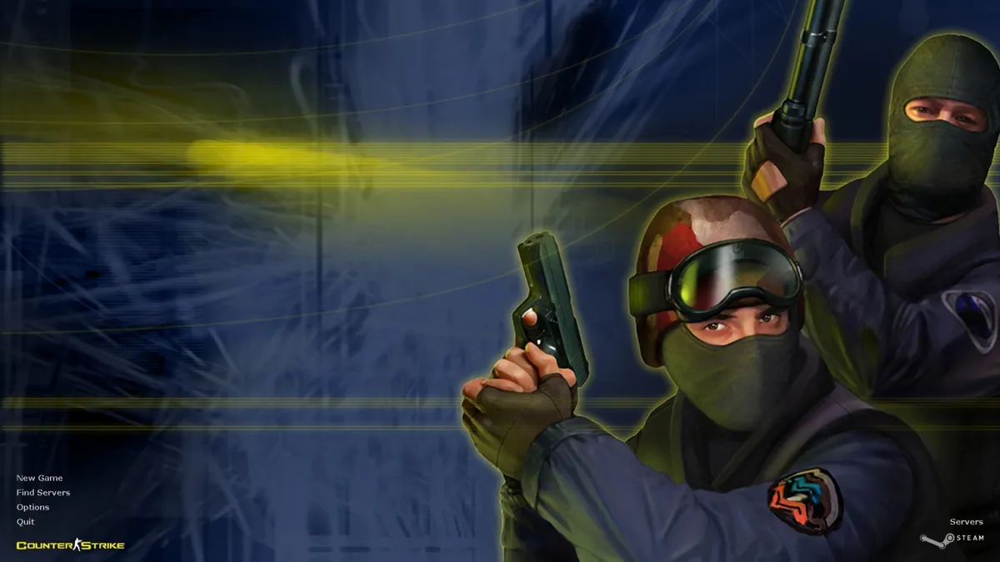
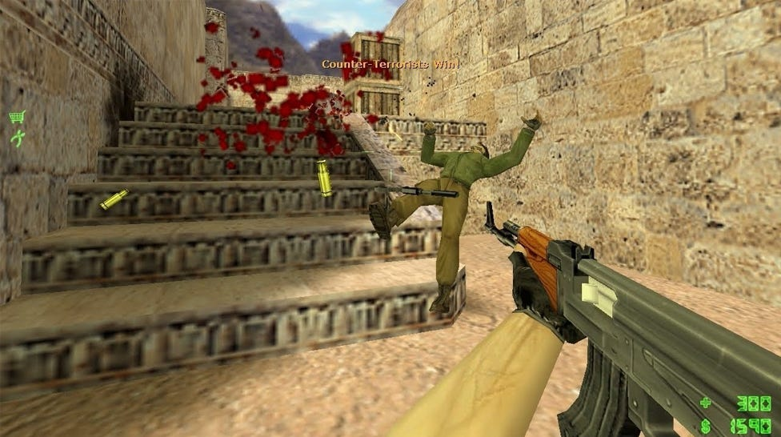
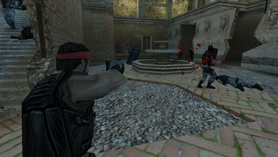

Counter-Strike 1.6 on Valven eteenpäin kehittämä ja vuonna 2000 julkaisema internetissä pelattava joukkuepohjainen ja taktinen ensimmäisen persoonan ammuntapeli.
CS 1.6 on pelisarjan ensimmäinen peli, jonka kehitti alun perin Minh ”Gooseman” Le sekä Jess ”Cliffe” Cliffe kunnes Valve osti sen oikeudet myyntiin.
Peli on jatkoa vuonna 1999 julkaistulle Half-Life pelin modille nimeltä Counter-Strike, joka saavutti nopeasti suuren suosion.
Pelin tavoitteena 1.6:ssa ja muissa versioissa menee näin: pelaajat jakautuvat kahteen joukkueeseen: terroristit ja poliisit. Pelin tavoitteena on suorittaa erilaisia tehtäviä, kuten pommin asettaminen tai panttivankien pelastaminen, samalla kun vastustajajoukkue yrittää estää heitä onnistumasta.

Osta CS 1.6 Steamin kautta.
Steam